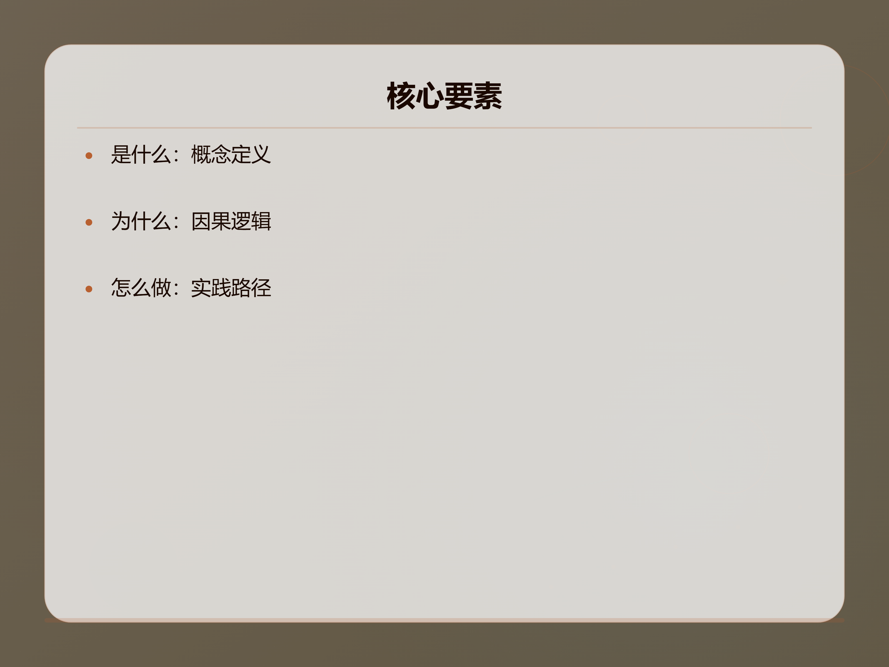
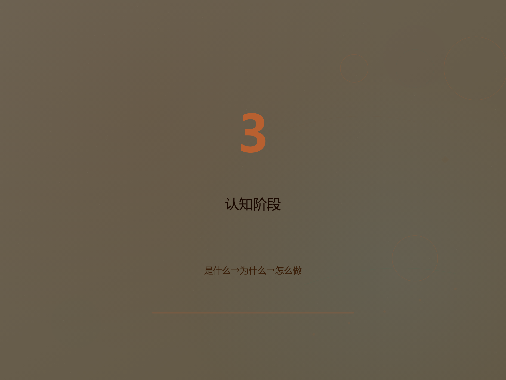
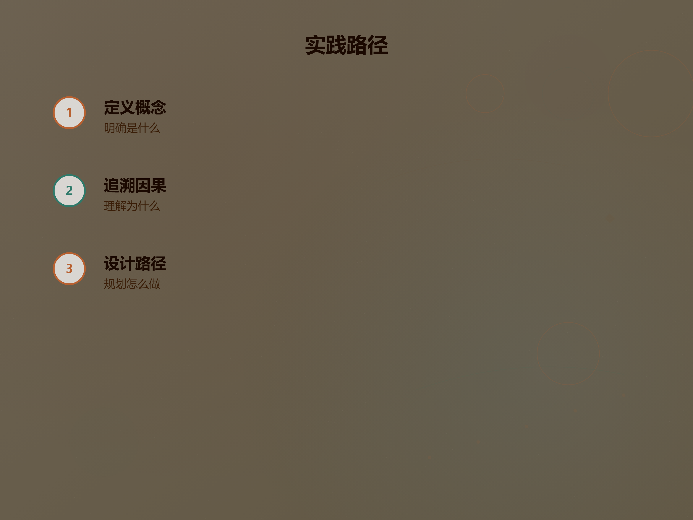
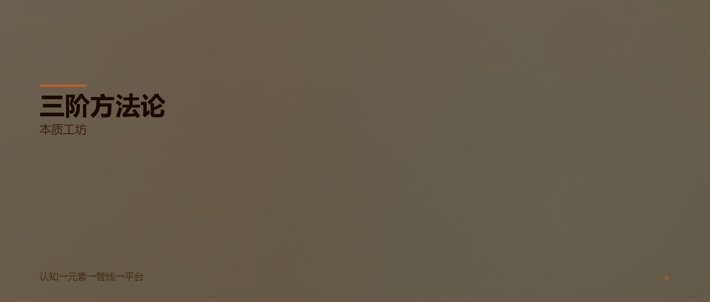

<section style="max-width:680px;margin:0 auto;padding:24px 16px;background:#FAF7F2;"><article><section style="margin-bottom:28px;padding:20px 24px;border-left:3px solid #C96442;background:#FEFCF9;"><p style="margin:0"><p style="margin-bottom:8px">真正的理解不是记住答案，而是掌握提问的方式。三阶方法论提供了一个从零构建认知的完整路径。</p></p></section><p style="text-align:center;"></p><h3 style="font-size:17px;font-weight:600;color:#8B5E3C;margin:20px 0 12px">是什么：概念的定义</h3><p style="margin-bottom:28px">每一个知识体系的起点，都是对<strong style="font-weight:700;background:linear-gradient(to top,rgba(212,118,58,0.18) 40%,transparent 40%);padding:0 2px">核心概念</strong>的精确定义。这不是简单的名词解释，而是要回答：这个概念为什么存在？它解决了什么问题？</p><p style="margin-bottom:28px">定义概念时，我们需要：</p><ul style="margin:16px 0;padding-left:24px"><li style="margin:8px 0">找到概念的<strong style="font-weight:700;background:linear-gradient(to top,rgba(212,118,58,0.18) 40%,transparent 40%);padding:0 2px">最小必要特征</strong></li><li style="margin:8px 0">区分它与其他概念的边界</li><li style="margin:8px 0">建立概念的<strong style="font-weight:700;background:linear-gradient(to top,rgba(212,118,58,0.18) 40%,transparent 40%);padding:0 2px">层次结构</strong></li></ul><p style="margin-bottom:28px">只有当「是什么」清晰之后，后续的探索才有意义。</p><h3 style="font-size:17px;font-weight:600;color:#8B5E3C;margin:20px 0 12px">为什么：因果的逻辑</h3><p style="margin-bottom:28px">理解了概念之后，下一步是追溯<strong style="font-weight:700;background:linear-gradient(to top,rgba(212,118,58,0.18) 40%,transparent 40%);padding:0 2px">因果关系</strong>。为什么这个概念是这样的？为什么它需要这些要素？</p><blockquote style="border-left:3px solid #C96442;background:#FEFCF9;margin:28px 0;padding:16px 20px;border-radius:0 10px 10px 0"><p style="margin-bottom:8px">知行合一，致良知。 —— 王阳明</p></blockquote><p style="margin-bottom:28px">因果追溯的核心方法：</p><ol style="margin:16px 0;padding-left:24px"><li style="margin:8px 0"><strong style="font-weight:700;background:linear-gradient(to top,rgba(212,118,58,0.18) 40%,transparent 40%);padding:0 2px">根因分析</strong>：连续追问5次「为什么」</li><li style="margin:8px 0"><strong style="font-weight:700;background:linear-gradient(to top,rgba(212,118,58,0.18) 40%,transparent 40%);padding:0 2px">反事实推理</strong>：如果不是这样，会怎样？</li><li style="margin:8px 0"><strong style="font-weight:700;background:linear-gradient(to top,rgba(212,118,58,0.18) 40%,transparent 40%);padding:0 2px">类比迁移</strong>：其他领域是否有类似结构？</li></ol><h3 style="font-size:17px;font-weight:600;color:#8B5E3C;margin:20px 0 12px">怎么做：实践的路径</h3><p style="margin-bottom:28px">理论最终要落地为<strong style="font-weight:700;background:linear-gradient(to top,rgba(212,118,58,0.18) 40%,transparent 40%);padding:0 2px">可执行的路径</strong>。三阶方法论的第三步，就是将理解转化为行动。</p><p style="margin-bottom:28px">具体来说，实践路径包含三个层次：</p><table style="width:100%;border-collapse:collapse;margin:20px 0"><thead><tr><th style="background:#F5E6DC;font-weight:600;padding:10px 14px;border:1px solid #E8E2DA;text-align:left">层次</th><th style="background:#F5E6DC;font-weight:600;padding:10px 14px;border:1px solid #E8E2DA;text-align:left">内容</th><th style="background:#F5E6DC;font-weight:600;padding:10px 14px;border:1px solid #E8E2DA;text-align:left">产出</th></tr></thead><tbody><tr><td style="padding:10px 14px;border:1px solid #E8E2DA">元素层</td><td style="padding:10px 14px;border:1px solid #E8E2DA">原子资产定义</td><td style="padding:10px 14px;border:1px solid #E8E2DA">可复用的基础组件</td></tr><tr><td style="padding:10px 14px;border:1px solid #E8E2DA">管线层</td><td style="padding:10px 14px;border:1px solid #E8E2DA">按约束组装</td><td style="padding:10px 14px;border:1px solid #E8E2DA">平台适配的成品</td></tr><tr><td style="padding:10px 14px;border:1px solid #E8E2DA">平台层</td><td style="padding:10px 14px;border:1px solid #E8E2DA">交付分发</td><td style="padding:10px 14px;border:1px solid #E8E2DA">用户可消费的内容</td></tr></tbody></table><p style="text-align:center;"></p><p style="margin-bottom:28px">关键原则：<strong style="font-weight:700;background:linear-gradient(to top,rgba(212,118,58,0.18) 40%,transparent 40%);padding:0 2px">先思后写、简洁优先、精准修改、目标驱动</strong>。</p><p style="margin-bottom:28px">代码示例：</p><pre style="background:#F5E6DC;padding:16px 20px;border-radius:10px;overflow-x:auto;margin:28px 0"><code style="background:none;color:inherit;font-size:inherit">def three_stage_method(concept):
 what = define_concept(concept)
 why = trace_causality(what)
 how = design_pathway(why)
 return CognitiveSystem(what, why, how)
</code></pre><p style="text-align:center;"></p><hr style="border-top:1px solid #E8E2DA;margin:36px 0" /><p style="margin-bottom:28px">三阶方法论不是终点，而是起点。当你掌握了「是什么到为什么到怎么做」的思维框架，你就拥有了一把打开任何知识领域的钥匙。</p><p style="text-align:center;"></p></article></section>